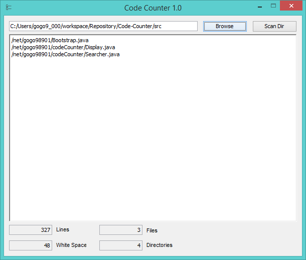
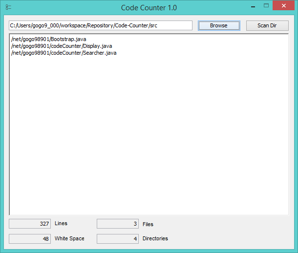

Code-Counter
A Simple program that counts the lines of code in a directory
Currently the exclude list contains. It can be found in Searcher.java
{ ".png", ".psd", ".db", ".ttf", ".dll", ".class" }
A Simple program that counts the lines of code in a directory
Currently the exclude list contains. It can be found in Searcher.java
{ ".png", ".psd", ".db", ".ttf", ".dll", ".class" }